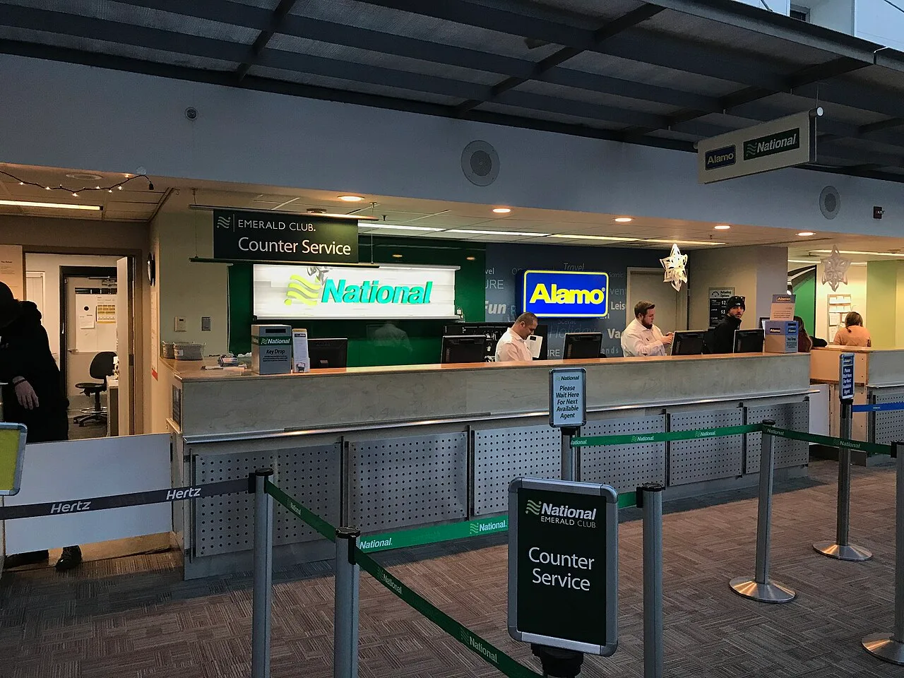

▲ 상대 과실 사고로 차를 못 쓰게 된 기간의 대차료는 상대 보험사가 부담한다 ⓒ Harrison Keely, Wikimedia Commons (CC BY 4.0)
상대 과실로 사고가 나서 차가 정비소에 들어가면, 그동안 탈 차가 필요합니다.
이 비용은 대차료라고 하며, 상대방 보험사의 대물배상에서 지급됩니다.
문제는 기준을 모르면 제시받은 금액을 그대로 받아들이게 된다는 점입니다. 동급이 무엇인지, 며칠까지인지는 약관에 정해져 있습니다.
1. 대차료는 어디서 나오나
대차료는 상대방 보험의 대물배상에서 지급됩니다. 내 자차보험이 아닙니다.
논리는 단순합니다. 상대 과실로 차를 쓰지 못하게 됐다면, 그 기간 동안의 사용 이익 상실도 손해라는 것입니다. 그래서 수리비와 별개로 인정됩니다.
다만 무제한은 아닙니다. 표준약관이 차량 급, 기간, 금액에 기준을 두고 있습니다.
가장 중요한 전제 하나. 내 과실 비율만큼은 줄어듭니다. 과실이 7대 3이라면 대차료도 그 비율로 조정됩니다. 과실 100%인 사고에서는 상대에게 청구할 대차료가 없습니다.
2. "동급"이라는 말의 뜻
표준약관은 동급의 대여자동차 중 최저요금으로 빌리는 데 드는 통상의 요금을 한도로 정하고 있습니다.
여기서 "동급"은 연식과 배기량이 유사한 차량을 뜻합니다.
실무에서 분쟁이 생기는 지점이 바로 여기입니다.
- 수입차를 몰다 사고가 난 경우 — 같은 배기량의 국산차를 제시받는 사례가 있다. 배기량이 유사하다면 약관상 다툼의 여지가 생긴다.
- 연식이 오래된 차 — 내 차가 10년 된 차라면, 최신 동급 차량 요금이 아니라 연식이 유사한 차량 기준이 적용될 수 있다.
- "최저요금" — 가장 비싼 렌터카 업체 요금이 아니라, 통상적인 최저 수준이 기준이다.
그래서 첫 제시액이 낮게 느껴진다면, 어떤 급을 기준으로 산정했는지부터 물어보는 것이 순서입니다. 근거를 요구하는 것은 정당한 절차입니다.
3. 며칠까지 나오나 — 25일과 30일
기간은 실제 수리에 걸린 날짜가 아니라 "통상의 수리기간"으로 계산합니다. 부품 수급 지연 같은 사유로 무한정 늘어나는 것을 막기 위해서입니다.
| 상황 | 한도 |
|---|---|
| 실제 정비작업시간 160시간 초과 | 30일 |
| 실제 정비작업시간 160시간 이하 | 25일 |
| 수리 불가·폐차 | 10일 |

▲ 차가 정비소에 서 있던 날짜와 실제 정비작업시간은 다르게 계산된다 ⓒ Saimmx, Wikimedia Commons (CC0)
"수리에 20일 걸렸는데 3일치만 나온다"는 이야기가 나오는 이유가 여기 있습니다. 정비소에 차가 서 있던 기간과 실제 정비작업시간이 다르기 때문입니다.
부품을 기다리며 차가 세워져 있던 날은 작업시간에 들어가지 않습니다. 다만 통상의 수리기간 산정 자체가 다툼의 대상이 되기도 합니다.
수리 불가로 폐차하는 경우 10일이라는 점도 알아둘 필요가 있습니다. 새 차를 구하는 데 걸리는 시간을 감안한 기준입니다.

▲ 대차 기간은 정비소에 차가 있던 날짜가 아니라 실제 정비작업시간을 기준으로 산정된다 ⓒ Shixart1985, Wikimedia Commons (CC BY 2.0)
4. 렌트를 안 하면 35%
차를 빌리지 않는 선택도 있습니다. 대중교통으로 다니거나, 가족 차를 쓰는 경우입니다.
이때는 렌트를 이용하지 않은 대신 교통비를 받습니다. 실무적으로 렌트요금의 35% 수준이 인정됩니다.
어느 쪽이 유리한가는 상황에 따라 갈립니다.
- 차가 꼭 필요한 경우 — 출퇴근이나 영업용이라면 실제 대차가 낫다
- 대중교통으로 충분한 경우 — 35%를 현금으로 받는 편이 실속 있을 수 있다
- 렌터카 사고 위험 — 익숙하지 않은 차로 또 사고가 나면 상황이 복잡해진다
렌터카를 이용할 때는 면책 조건을 반드시 확인해야 합니다. 대차 중 사고가 나면 면책금과 휴차료 문제가 따로 발생합니다.

▲ '허'가 들어간 번호판은 대여용 차량이다. 대차 중 사고는 면책금과 휴차료가 별도로 발생한다
5. 실무에서 챙겨야 할 것들
분쟁을 줄이려면 순서를 지키는 편이 낫습니다.
- ① 대차 전에 상대 보험사에 먼저 알린다 — 임의로 빌린 뒤 청구하면 급과 요금에서 다툼이 생긴다.
- ② 어떤 급으로 산정했는지 근거를 확인한다 — 연식과 배기량 기준을 물어본다.
- ③ 수리 기간 산정 근거를 받아둔다 — 정비소 견적서와 작업 내역을 확보한다.
- ④ 렌트 미이용 시 교통비를 청구할 수 있다는 점을 안다 — 안내받지 못하는 경우가 있다.
- ⑤ 합의 전에 대차료가 포함됐는지 확인한다 — 수리비만 합의하고 대차료를 빠뜨리는 사례가 있다.
보험사와 이견이 좁혀지지 않으면 금융감독원이나 손해보험협회의 분쟁 조정 절차를 이용할 수 있습니다. 소송보다 부담이 적습니다.
다만 지나친 기대는 금물입니다. 표준약관은 실제 손해를 메우는 것이지 더 좋은 차를 오래 타게 해주는 제도가 아닙니다.

▲ 대차 전에 상대 보험사에 먼저 알리고 산정 근거를 확인하는 것이 분쟁을 줄인다
6. 정리
상대 과실 사고의 대차료는 상대방 보험의 대물배상에서 지급되며, 내 과실 비율만큼 줄어듭니다.
기준은 동급 대여자동차 중 최저요금이고, 동급은 연식과 배기량이 유사한 차량을 뜻합니다. 기간은 실제 정비작업시간 160시간 초과 시 30일, 이하면 25일이며 수리 불가·폐차는 10일입니다.
렌트를 이용하지 않으면 렌트요금의 35% 수준을 교통비로 받을 수 있습니다. 대차 전에 상대 보험사에 먼저 알리고 산정 근거를 확인하는 것이 분쟁을 줄이는 방법입니다.